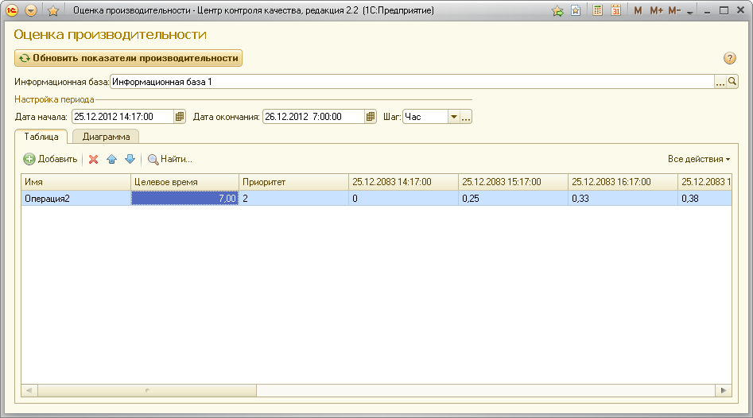
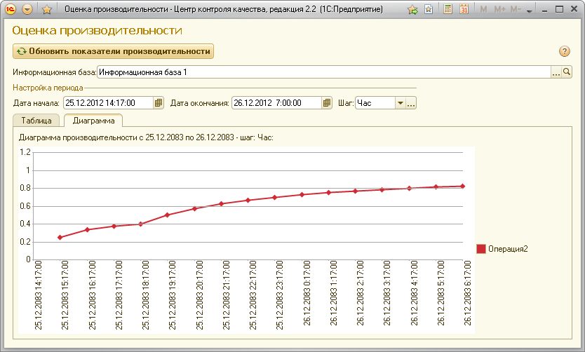

Это сообщение означает, что значение Apdex для данной ключевой операции меньше, чем необходимо для данной ключевой операции.
Для решения задачи рекомендуется использовать «Центр управления производительностью», входящий в состав «1С:Корпоративного инструментального пакета».
Подробные инструкции по подключению см. в книге «1С:Корпоративный инструментальный пакет 8. Редакция 1.1. Руководство по использованию», стр. 37.
Подробные инструкции см. там же на стр. 41.
Подробные инструкции см. там же на стр. 45.
Необходимо регулярно контролировать собранные ЦУП'ом показатели производительности системы на предмет наличия симптомов проблем производительности.
Рекомендуемая частота контроля производительности - 1 раз в день.
Для оценки производительности системы, необходимо проанализировать результаты мониторинга на наличие симптомов проблем производительности.
Все имеющиеся симптомы следует зарегистрировать в данной форме. После этого контрольная процедура перейдет в режим оптимизации системы.
Значения показателя «Среднее время ожидания на блокировке СУБД» близки к значениям показателя «Среднее время выполнения запроса». Это означает, что большую часть времени система простаивает в ожиданиях на блокировках СУБД. Если время ожиданий составляет 50% от времени выполнения запросов, то проблему необходимо расследовать. Если это соотношение еще больше, то проблема является серьезной.
Не равны нулю значения следующих показателей:
Это означает, что в системе наблюдаются взаимоблокировки и/или таймауты, то есть пользователи получают соответствующие сообщения об ошибках.
В течение длительного времени наблюдается практически линейный рост показателя «Максимальное время выполнения запроса», после чего следует его падение до обычных значений. Это означает, что в системе выполнялся один или несколько длительных запросов, которые вероятно могут быть оптимизированы.
Наблюдается постепенный значительный рост или внезапный «всплеск» значений следующих показателей:
При обнаружении симптомов проблем необходимо провести их разбор и оптимизацию системы. Этот процесс состоит из следующих основных этапов:
На этом этапе необходимо собрать аналитическую информацию по проблемам производительности при помощи Центра управления производительностью.
Для этого следует выполнить следующую последовательность действий:
Вы можете не добавлять в список показатель «Анализ взаимоблокировок» в том случае, если уверены, что взаимоблокировок в системе нет. Например, система работала в однопользовательском режиме или в многопользовательском режиме не наблюдалось отличное от нуля значения показателя «Количество взаимоблокировок».
Вы можете не добавлять в список показатель «Анализ ожиданий на блокировках» в том случае, если вы уверены, что в системе нет ожиданий на блокировках. Например, система работала в однопользовательском режиме или в многопользовательском режиме значения показателей «Суммарное время ожидания на блокировках СУБД» и «Суммарное время ожидания на блокировках 1С» было близко к нулю.
Это позволит уменьшить количество информации, собираемой ЦУП, и сократит время ее обработки.
Запись показателей необходимо включать в то время, когда в системе наблюдаются проблемы производительности. Если проблемы наблюдаются не всегда, а только эпизодически (в определенных режимах работы, в период предельной загрузки системы и т.д.), то следует включать сбор аналитической информации именно в это время.
ВНИМАНИЕ!!! Включение записи аналитических показателей может привести к замедлению работы системы.
Период сбора аналитической информации необходимо выбирать исходя из следующих факторов:
При наличии в системе серьезных проблем производительности, как правило, достаточно включить запись аналитических показателей на 10-15 минут.
После отключения записи аналитических показателей ЦУП произведет анализ собранных данных и поместит результаты анализа в свою информационную базу. Время анализа данных пропорционально периоду сбора аналитической информации и может быть значительным.
Для анализа проблем производительности и оптимизации системы необходимо выполнить следующую последовательность действий:
Для этого необходимо подключиться к исследуемой базе в режиме «Просмотр». Если отключение мониторинга нежелательно (необходимо обеспечить постоянный мониторинг производительности в исследуемой базе), то следует открыть новое соединение с информационной базой ЦУП и подключиться к исследуемой базе в режиме «Просмотр».
Для упрощения работы с различными периодами времени рекомендуется использовать закладки. См. «Руководство по использованию», стр. 60.
Следует анализировать проблемы в разрезе строк кода конфигурации. Для справки во время анализа можно использовать информацию о проблемах в разрезе структуры данных.
Источники проблем (строки кода) следует анализировать сверху вниз – в порядке убывания общего веса проблем, относящихся к данному источнику.
Для каждого источника (строки кода конфигурации) следует провести анализ проблем, обнаруженных в данной строке кода «Центром управления производительностью».
Откройте второй уровень дерева источников проблем для выбранной строки кода конфигурации. Он отображает все виды проблем, зафиксированные в данной строке кода и вес проблем каждого вида.
Виды проблем расположены в порядке убывания веса. Пользуясь рекомендациями, данными ниже по ссылкам, проведите анализ и оптимизацию кода конфигурации и структуры метаданных в зависимости от вида проблем, обнаруженного ЦУП в данной строке кода. Если в данной строке обнаружены проблемы разных видов, то рекомендуется начинать анализ с проблем, имеющих больший вес.
Инструмент "Анализ и устранение проблем производительности", ссылку на который можно найти на панели справа, предназначен для анализа динамики изменения показателя Apdex.
В верхней части окошка предлагается указать исследуемую информационную базу и интересуемый временной отрезок и шаг дискретной временной решётки.
После нажатия на кнопку "Обновить показатели производительности" на вкладке "Таблица" появится таблица. Каждая колонка этой таблицы представляет собой временную развёртку значений Apdex по соответствующей ключевой операции с шагом указанным в поле "Шаг".

На вкладке "Диаграмма" можно увидеть графическую интерпретацию таблицы.
